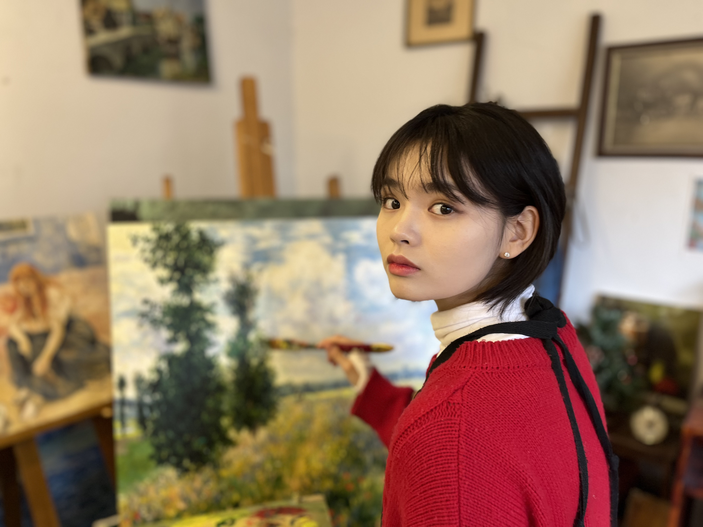

Danbi Kim /ˈdɑn.bi kim/

Hello, I am Danbi Kim.
Mathematically trained researcher with a dual degree in Mathematics and Aerospace Engineering from KAIST. Currently on leave from an M.S. program to pursue quantitative finance research.
I am drawn to problems where rigorous mathematical modeling meets large-scale data — and to environments where the quality of an idea can be tested quickly and precisely. My work spans factor research, systematic signal development, and numerical simulation. You can explore my work in the Projects section.
Education
-
M.S. in Mechanical Engineering — KAISTOn leave of absence to pursue quantitative finance research2025–
-
B.S. in Mathematics & Aerospace Engineering — KAISTGPA 3.86 / 4.3 · Magna Cum Laude · Dual degree2020–2024
Experience
-
WorldQuant BRAIN — Research ConsultantAlpha research on U.S. equities · Gold Level, WorldQuant Challenge · Built automated alpha simulation pipeline using the BRAIN API in Python2026
-
IQC 2026 — ParticipantInternational Quant Championship, WorldQuant · Team-based alpha development across multiple strategies2026
-
PwC Consulting — Research Assistant, Digital & AIRefactored Confluence→Milvus VectorDB pipeline for RAG-enhanced LLM; reduced refresh time from 30 min to 2 min2025
-
Solid Mechanics & Materials Lab, KAIST — Undergraduate InternProf. Hansohl Cho · FEM simulation of hyperelastic thin plates in Abaqus (Python) · Active particle simulation · LCE soft material mechanics2023–2024
-
Global Navigation Satellite Systems Lab, KAIST — Undergraduate InternProf. Jiyun Lee · Satellite system fundamentalsWinter 2022
Honors & Achievements
-
KAIST Reading King — Individual Category Champion제 4회 카이스트 독서왕 대상2025
-
KAIST Q-Day Student Special Awards — Trust & CommunicationAwarded for contributions to humanities and arts programs as the KSOP Media Team (with 정예나, 김현진)2024
-
KAIST Aerospace Engineering Hong Chang Sun ScholarshipEstablished for students with excellent academic records, in honor of Prof. Hong Chang Sun2023
-
KAIST National Science & Technology ScholarshipFull four-year tuition scholarship with monthly stipend2020–2023
-
KAIST Reading King — Individual Category Encouragement Award제 2회 카이스트 독서왕 개인부문 장려상2022
Extracurricular
-
KAIST Swimming Team KAORIBronze medal — Backstroke 100m, 3rd Gimcheon Masters (2025) · Bronze medal — Freestyle 100m, 29th KAIST Swim Meet (2024) · 5th place — Freestyle 100m, 2nd Gimcheon Masters (2024)2024–
-
KAIST Broadcast VOK (Voice of KAIST) — AnnouncerMC for the 35th Taewool Music Festival (2022)2020–2022
-
KAIST Science Outreach Program (KSOP)Content Development (2022–2024) · Education Mentor (2022) · Operations Coordinator (2021)2021–2024
Selected work in quantitative research, mathematical modeling, and software.
Quantitative Research
Mean-variance and CVaR portfolio optimization using real equity data. Implements efficient frontier construction, factor exposure constraints, and rebalancing under transaction cost penalties.
Mathematical Modeling
Approximates arbitrary closed curves using Fourier series on the complex plane. Inspired by 3Blue1Brown, processes raster images via edge detection and contour extraction, then reconstructs the path as a sum of rotating phasors. Final project for AE280 Software Application in Aerospace Engineering.
Implemented a 2D finite element method solver in MATLAB for structural mechanics. Handles mesh generation, stiffness assembly, and displacement field computation for planar stress/strain problems.
Software
Led migration of the KAIST swim meet booklet from Hangeul to LaTeX, enabling a clean file-tree structure for collaborative editing. Python pipeline automates lane assignment and heat sheet generation from raw registration data. Later integrated into the official KAORI website.
Educational game developed as part of the KSOP CS curriculum for middle and high school students. Features a dodge-and-collect mechanic with score tracking, start/game-over screens, and step-by-step teachable game logic.
Extracurricular
Learned freestyle from scratch in three weeks to pass the 1,500m qualification test. Competed in multiple university and regional swim meets.
Served as MC for the 35th Taewool Music Festival, a four-hour campus event. Memorized an extensive script and coordinated live with a co-host to ensure a high-quality show.
Participated as assistant organizer and moderator for the 2023 KSOP Summer Camp. Focused on facilitating smooth communication behind the scenes.
Operations Mentor responsible for program scheduling and participant coordination. Served as host for a special lecture by Krafton Chairman Chang Byung-gyu.